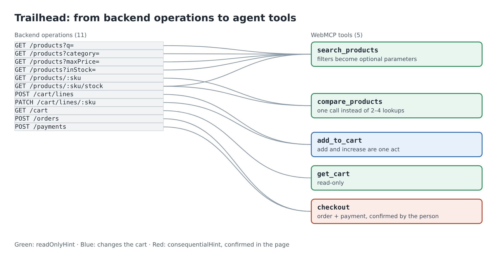
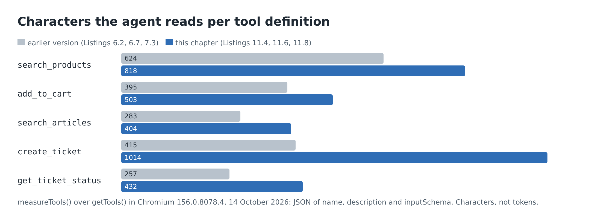

“More tools don’t always lead to better outcomes.”
— Anthropic, “Writing effective tools for agents — with agents”1
The reader who can’t ask questions
Every tool you register has two readers. One is the browser, which checks the name, stores the schema as a string and calls execute when it is told to (Chapter 5). The other is a language model that has never seen your site before, is in the middle of someone else’s errand, and will decide in a fraction of a second whether your tool is the one it needs. The browser reads your definition literally. The model reads it the way a new colleague reads a note left on their desk: it fills the gaps with guesses.
Everything the model knows about a tool comes from four places. The name and the description are read before any call. The input schema tells it what to send. The result, including any error, tells it what happened and what to do next. Nothing else reaches it: not your code, not your intentions, not the comment above the function. The specification describes the description member as “a natural language description of the tool’s functionality” that “helps agents understand when and how to use the tool,”2 and that is about all the help the platform gives. Making the text good is your job.
Chapters 5 and 6 gave Trailhead and Fjord Table working tools and a set of rules that were enough to get started. Chapter 10 ended with a sharper question: Trailhead’s tools work, but are they the right tools? This chapter treats tool design as product design. It covers how many tools to offer and how coarse to make them, how to name and describe them within a character budget, how to write schemas that leave little room for misreading, how to word results and errors so that a model does the right thing next, and how to keep all of that agent-facing text in step with the interface people see.
The chapter uses two projects. Trailhead gets a redesigned catalogue and cart. The Helpdesk Widget from Chapter 7, which Supportly embeds in Ledgerly, gets its three tools rewritten from the model’s side. Every rule comes with a check you can run. The demos folder for this chapter contains a small lint for tool definitions and a validator that reads the same schema the agent sees, and its test suite runs every tool in Chromium 156 with WebMCP enabled.3
Tool strategy and budget
Every tool costs something before it is called
A tool that is never called still costs the agent something. The explainer is blunt about it: “Every registered tool (its name, description, and input schema) consumes tokens in the model prompt, adds to inference latency, and increases the potential for tool confusion or hallucination.” It warns that “dozens or hundreds” of tools can “severely degrade agent performance or lead agent browsers to drop tools or fail to process them.”4 Chrome’s best-practices guide says the same thing more gently. There is no maximum, but “each tool takes up part of the context window and adds to the time for completion,” and “the more tools you provide and the more the tools have overlap, the harder it is for the agent to pick correctly.”5
Nobody has published a number for WebMCP. The closest figure I found comes from a different platform: OpenAI’s function-calling guide suggests aiming “for fewer than 20 functions available at the start of a turn at any one time,” and calls that “just a soft suggestion.”6 Treat it as a sanity check, not a target. A page also isn’t the only thing in the agent’s context: the agent may have tools from other tabs, its own built-in tools and tools from MCP servers. Your page’s tools compete with all of them.
You can measure your own share. The lint in Listing 11.1, later in this chapter, includes a measureTools() function that adds up the characters of each definition as getTools() returns it. Characters aren’t tokens, because every model tokenizes differently, but they are a stable proxy you can track in CI. Trailhead’s three catalogue and cart tools in this chapter come to 1,798 characters; the widget’s three come to 1,850 (measured in Chromium 156).3:1
Start from tasks, not endpoints
The most common way to end up with too many tools is to wrap your API. Trailhead’s backend has endpoints for listing products, getting one product, getting a price, getting stock, filtering by category, adding a cart line, updating a cart line and so on. Exposing each one as a tool feels thorough. Anthropic’s engineering team describes it as the error they see most: “tools that merely wrap existing software functionality or API endpoints—whether or not the tools are appropriate for agents.”1:1 Their suggested fix is to design for the task: instead of list_users, list_events and create_event, a single schedule_event that “finds availability and schedules an event.”1:2 OpenAI’s guide makes the same point from the other side: “Combine functions that are always called in sequence.”6:1
Figure 11.1 shows what that looks like for Trailhead. On the left are the backend operations. On the right are the five tools the store actually registers. The mapping isn’t one to one. search_products absorbs three filter endpoints as optional parameters. compare_products replaces “get one product” called four times. add_to_cart covers both “add a line” and “increase a quantity,” because a person never thinks of those as different things.

A useful way to find the right tools is to write down what a person actually comes to do and what they would say to a shop assistant. Table 11.1 does that for Trailhead.
Table 11.1 — Trailhead’s user tasks and the tools that serve them
| What the person says | Tool | Why this shape |
|---|---|---|
| “Find me a light two-person tent under 4,000 kroner.” | search_products |
One search with optional filters, not one tool per filter |
| “Which of these two is lighter?” | compare_products |
One call returns every attribute for 2–4 products |
| “Put the boots in my basket, size 42.” | add_to_cart |
Adding and increasing are the same act for a person |
| “What’s in my cart?” | get_cart |
Read-only, so it can run without asking |
| “Go ahead and order it.” | checkout |
Separate because it has consequences (Chapter 6) |
Coarse or fine?
“Fewer tools” isn’t a rule to apply blindly. Chrome asks for tools that each “consist of a single function” and warns against overlap,5:1 and the explainer asks that “each tool should represent a single, well-defined function.”4:1 The way to reconcile “consolidate” with “single function” is to ask where a person would see one decision.
Three tests work well in practice.
- Merge what is always chained. If the agent will call A and then B every time, make one tool. A search that needs a separate “apply filter” call is two tools pretending to be one.
- Split where consequences differ. Annotations belong to the whole tool (Chapter 6). A tool that both reads and buys can’t be
readOnlyHint, so the agent has to treat every call as risky.get_cartandcheckoutstay separate for that reason, even though both are about the cart. - Split where the person would want to be asked. If one branch of a tool needs confirmation and another doesn’t, the agent can’t tell from the definition which call it is about to make. Make two tools.
The Helpdesk Widget passes all three tests with three tools: searching articles reads, opening a ticket writes and is confirmed in the widget, and checking a ticket reads text written by people. Folding “search, and if nothing helps, open a ticket” into one tool would save a call and lose the confirmation boundary.
Collections, skills and other ways to scale
What should an application with a hundred tools do? WebMCP has no answer yet, but the question is open in the Community Group. Issue #255, “Tool collections: coarse-grained grouping with progressive disclosure,” opened on 22 August 2026, observes that “a moderately complex app can easily surface 100+ tools” and that getTools() “hands the agent one flat list.” It proposes groups that an agent could read first and drill into later.7 Issue #161, opened on 3 April 2026, proposes “skills”: a registerSkill() call that bundles tool names with workflow instructions and context, because “Tools can tell agents what a site can do, but Skills tell agents how to do it well.”8 Issue #167 proposed lazy schemas, a disabled flag and an updateTool() method; it is now closed.9 The explainer sums up where things stand: “WebMCP does not currently define an in-place updateTool() method, lazy schemas, or disabled and grouped tool states.”4:2
Naming, descriptions and character budgets
Names that sort themselves out
Chapter 5 covered what the browser accepts in a name: 1 to 128 ASCII letters, digits, underscores, hyphens and full stops. What agents handle well is narrower. Chrome recommends verbs “that describe exactly what happens” and separating “execution from initiation”: create-event creates, start-event-creation-process opens a form.5:2 Its security guide recommends keeping names to about 30 characters.10
Two more habits pay off once a tab has tools from more than one source. First, keep one naming style per site. Trailhead and Supportly both use snake_case with a verb and an object: search_products, add_to_cart, search_articles, get_ticket_status. Second, put the object in the name, even when it seems obvious. Ledgerly’s page can hold Ledgerly’s own tools and Supportly’s widget tools at the same time (Chapter 7). A bare search from each would leave the agent guessing. Anthropic reports that grouping related tools under shared prefixes or suffixes helps agents “select the right tools at the right time,” and that the choice between prefixes and suffixes had “non-trivial effects” in their evaluations, varying by model.1:3 search_articles and search_products are distinguishable without any extra machinery.
Parameter names deserve the same care. Anthropic’s example is to name a parameter user_id rather than user.1:4 The widget uses ticketId, not id or ticket: an agent that reads ticketId with the example SUP-1042 in its description doesn’t have to guess whether it should send a number, a URL or a ticket object.
What a description has to say
The description is read every time the agent considers your tool, so every sentence has to earn its place. I use a four-part template and drop any part that the name already makes obvious:
- What it does, as a verb and an object. “Search Supportly’s help articles…”
- When it is the right tool, especially compared with its neighbours. “…for how-to answers about Ledgerly.”
- What comes back, in enough detail that the agent knows what it can do with the result. “Returns up to 5 articles, best match first, each with title, link and a short excerpt.”
- Side effects and who confirms them, stated as facts. “The user reviews and sends it in the help widget.”
Chrome’s guide asks for the same core: “what the tool does and when to use it,” with “positive language” rather than limitations. Its example: “This tool can create a calendar event, scheduled for a specific date and time,” instead of “Don’t use this tool for weather.”5:3 The reason is practical. A prohibition names a task the tool doesn’t do, which puts that task in the model’s mind, and it never ends: there is always another thing the tool doesn’t do.
Anthropic suggests imagining how you “would describe your tool to a new hire on your team,” and making explicit the context you would otherwise bring implicitly: “specialized query formats, definitions of niche terminology, relationships between underlying resources.”1:5 OpenAI calls the same idea “the intern test”: “Can an intern/human correctly use the function given nothing but what you gave the model?”6:2 For a web page, the implicit context is usually the product’s vocabulary. Ledgerly users say “export”, Supportly calls a ticket’s state waiting_on_user, Trailhead writes prices in NOK. Say so.
Three things don’t belong in a description:
- Live state. “The cart has 3 items” is wrong as soon as someone adds a fourth, and agents may cache the definition. Chapter 10 moved that kind of information into results and read-only tools.
- Instructions to the agent about its own behaviour. “Always call this tool first” or “Prefer this tool over other searches” is steering, not description. Chapter 12 explains why a careful agent should read it as an injection attempt, which makes it counterproductive as well as rude.
- Vague verbs for consequential acts. The specification’s own warning example is a tool named
finalizeCartdescribed as “Finalizes the current shopping cart,” which actually places an order. An agent that thinks the user wants to view a final cart calls it, “and it actually triggers a purchase.”11 The draft lists “poorly written descriptions, outdated documentation, or inherent imprecision in natural language” and “side effects not mentioned in the description” as forms of accidental misalignment.11:1 If a tool spends money, sends a message or deletes something, its description says so in the first sentence.
Parameter descriptions
Every parameter needs a description, and the most useful ones are short and concrete. A good parameter description says what the value means, gives its format or unit, shows one realistic example and, where it matters, says where the value comes from. Compare Trailhead’s two versions of sku:
- Chapter 6: “Product SKU from search_products.”
- This chapter: “SKU from search_products. Footwear SKUs end in the EU size, e.g. TH-BOOT-FJELL-42.”
The second adds the one piece of local knowledge that the agent couldn’t have guessed. As the next sections show, that same sentence also appears in the error the agent receives when it gets the SKU wrong, so it is written once and used twice.
Character budgets, enforced by a test
Chrome’s security guide recommends 500 characters per tool description, 150 per parameter description, 30 per tool or parameter name and 1,500 per tool output, and notes that “there is some variation across agents” and that the figures may change or move into the specification.10:1 The draft itself limits only the name, to 128 characters. Its security section suggests restricting other lengths because shorter text “helps shrink the possible universe of attacks,” and says that “further work is needed to evaluate the right size limits for titles, names, and other inputs,” pointing to issue #73.12 That issue, opened on 30 January 2026 and still open, also mentions quality: “there is also a cutoff at which long elaborate prompts tend to confuse models more than help them.”13
Budgets that live in a style guide get forgotten. Budgets that live in a test don’t. Listing 11.1 is a small lint that runs over getTools() output in the demos’ test suite. It checks the budgets, the naming style, that the description says what the tool returns, that every parameter is described, and three of the habits from this section: no steering words, no prohibitions as framing, and no empty or numeric enum values.
// Measures and lints the agent-facing text of tools, as getTools() returns them.
// A development check for tests and CI; nothing here runs in production.
// Chrome's recommended budgets (guidance, not enforced by the browser).
export const BUDGET = { name: 30, description: 500, paramName: 30, paramDescription: 150 };
// Phrases that instruct the agent instead of describing the tool (Chapter 12).
const STEERING = /\b(always|never|you must|ignore|instead of any other|prefer this tool)\b/i;
const PROHIBITION = /(^|\.\s+)(do not|don't|never) /i;
// What a tool costs the agent before anyone calls it: the characters of the
// definition it reads. Characters, not tokens; tokenizers differ by model.
export function measureTools(tools) {
const rows = tools.map((t) => ({
name: t.name,
chars: JSON.stringify({ name: t.name, description: t.description, inputSchema: t.inputSchema }).length,
}));
return { rows, total: rows.reduce((sum, r) => sum + r.chars, 0) };
}
export function lintTool(tool) {
const problems = [];
const add = (where, rule, detail) => problems.push({ tool: tool.name, where, rule, detail });
if (tool.name.length > BUDGET.name) add('name', 'budget', `${tool.name.length} characters`);
if (!/^[a-z]+(_[a-z]+)+$/.test(tool.name)) add('name', 'verb_object', 'use snake_case verb_object');
const d = tool.description ?? '';
if (d.length > BUDGET.description) add('description', 'budget', `${d.length} characters`);
if (!/\breturns?\b/i.test(d)) add('description', 'says_what_it_returns', 'say what comes back');
if (STEERING.test(d)) add('description', 'no_steering', d.match(STEERING)[0]);
if (PROHIBITION.test(d)) add('description', 'positive_framing', 'state what it does, not what not to do');
const schema = typeof tool.inputSchema === 'string' ? JSON.parse(tool.inputSchema) : tool.inputSchema;
for (const [name, p] of Object.entries(schema?.properties ?? {})) {
const where = `inputSchema.${name}`;
if (name.length > BUDGET.paramName) add(where, 'budget', `${name.length} characters`);
if (!p.description) add(where, 'described', 'every parameter needs a description');
else if (p.description.length > BUDGET.paramDescription) add(where, 'budget', `${p.description.length} characters`);
const values = p.enum ?? p.oneOf?.map((o) => o.const) ?? [];
if (values.includes('')) add(where, 'no_empty_enum', 'make the parameter optional instead');
if (values.some((v) => /^\d+$/.test(String(v)))) add(where, 'readable_enum', 'use words, not IDs');
}
return problems;
}
A lint like this can’t tell whether a description is good. It catches the mechanical mistakes, so that review time goes on the words. It is also deliberately conservative: “must” in a description isn’t always steering, and you may decide to allow it. The point is that every exception is a decision someone made, not an accident.
Running it over the earlier versions of the tools in this book is instructive. Table 11.2 shows what it found in the definitions from Chapters 6 and 7.
Table 11.2 — Lint findings for the earlier tool definitions
| Tool (source) | Findings |
|---|---|
search_products (Listing 6.2) |
category has no description |
add_to_cart (Listing 6.7) |
quantity has no description |
search_articles (Listing 7.3) |
query has no description |
create_ticket (Listing 7.3) |
subject, body and priority have no descriptions |
get_ticket_status (Listing 7.3) |
Description doesn’t say what it returns in those words; ticketId has no description |
Source: tests/run-tests.mjs in the demos folder, run on 14 October 2026.3:2
None of these is a bug in the sense Chapters 6 and 7 cared about: the tools worked, and the tests passed. They are exactly the gaps a model fills with guesses. An undescribed priority enum invites the agent to choose high for anything that sounds unpleasant. The next section shows how to say what each value means.
Schemas that reduce ambiguity
The schema is advice, so make it precise advice
Chapter 5 established that the browser doesn’t validate arguments against inputSchema: it stores “the stringified representation of the inputSchema,” makes it available to the agent, and passes whatever object comes back to execute.14 That makes the schema a piece of writing aimed at the model, not a contract. It can still be very precise writing. JSON Schema has keywords that close off whole classes of misreading, and the ones that matter most for tools are few.
Enums with words. The enum keyword “is used to restrict a value to a fixed set of values.”15 Use values a person would say: 'tents', not 3. Chrome and the explainer both make the point with shipping: shipping="Express" instead of shipping_id=1.5:44:3 Listing 11.1 flags numeric enum values for that reason.
No empty option. Chapter 8 noticed that a declarative form’s “No preference” option becomes the value "" in the schema, and suggested that a hand-written tool would make the parameter optional instead. That is the rule: absence is expressed by leaving a parameter out, never by a magic value. The lint flags "" in any enum.
Optional parameters say what happens when they are omitted. “Only search one category. Omit to search all of them.” “true hides products that are out of stock. Default false.” The agent shouldn’t have to infer a default.
Required means “can’t work without it.” Not “usually useful” and not “we’d like to know.” Over-requiring forces the agent to invent values. The specification’s privacy section adds a sharper reason to keep the list short. In its over-parameterization scenario, a dress-search tool adds optional parameters for age, pregnancy and location, and because “agents are designed to be helpful,” they fill them in from personal context, creating “a personalization-to-fingerprinting pipeline.”16 OpenAI’s guide has the everyday version: “Don’t make the model fill arguments you already know.”6:3 Supportly already knows who is signed in to the widget, so create_ticket asks for the problem and nothing about the person.
Arrays with bounds. compare_products takes skus with minItems: 2, maxItems: 4 and uniqueItems: true. The bounds say in schema terms what the description says in words, and they survive registration intact: getTools() in Chromium returned them unchanged (observed).3:3
Structure that prevents impossible states. OpenAI’s example is toggle_light(on: bool, off: bool), which “allows for invalid calls.”6:4 One state enum with 'on' and 'off' can’t be both.
Enums that explain themselves: oneOf with titles
A bare enum tells the agent which strings are allowed, not what they mean. For many parameters the meaning is obvious ('tents'). For others it isn’t, and the difference matters. The widget’s priority is the clearest case. To a model, high and normal are adjectives. To Supportly’s support team they are promises: a high-priority ticket gets a reply within four hours and pulls someone off other work.
JSON Schema can say both things. oneOf means the value “must be valid against exactly one of the given subschemas,”17 and a subschema can be a single const value, which “is used to restrict a value to a single value.”18 Each subschema can also carry a title, which JSON Schema describes as preferably short text about the data.19 Put together, a list of { const, title } pairs is an enum in which every value has its own explanation. Chapter 8 observed that Chrome’s declarative implementation generates a similar structure for a <select>: an anyOf list that pairs each option value with its visible text as a title. That isn’t an accident. The visible label is exactly what a person reads to choose.
Listing 11.2 defines the widget’s priorities once, in a module that both the widget’s form and its tools import. That second fact turns out to matter as much as the first, and it is the subject of the last part of this chapter.
// Supportly widget: every word that people and agents see, in one place.
// The form (widget-form.js) and the tools (widget-tools.js) both import it.
export const LIMITS = { query: 200, subject: 120, body: 4000 };
export const PRIORITIES = [
{ const: 'low', title: 'Low: a question; nothing is blocked. Reply within 2 business days.' },
{ const: 'normal', title: 'Normal: something is broken, with a workaround. Reply within 1 business day.' },
{ const: 'high', title: 'High: the user or their team cannot work. Reply within 4 hours.' },
];
export const COPY = {
searchArticles: { title: 'Search help articles' },
createTicket: { title: 'Open a support ticket', send: 'Send ticket', cancel: 'Cancel' },
getTicketStatus: { title: 'Check a support ticket' },
fields: {
subject: 'Subject',
body: 'What happened?',
priority: 'How urgent is it?',
},
};
The titles describe each level in terms the agent can match against what the user said (“nothing is blocked”, “cannot work”), and they state the consequence (“Reply within 4 hours”) so that the agent can tell the user what to expect. Chromium 156 passed the oneOf array through registration unchanged, and getTools() returned all three { const, title } pairs exactly as written (observed).3:4
There is a cost. The widget’s create_ticket definition grew from 415 characters in Chapter 7 to 1,014 in this chapter, and most of the growth is the three titles and the parameter descriptions (measured).3:5 It is still well inside Chrome’s budgets, because the budgets apply to individual descriptions, not to whole schemas, but it is real context the agent pays for on every turn. Spend it where a wrong choice is expensive. priority qualifies. Trailhead’s category doesn’t: the values say what they are.
One schema, two jobs: validate with the schema you published
“Validate strictly in code, loosely in schema” is Chrome’s rule,5:5 and Chapter 6 followed it with hand-written checks in every execute. That works, but it creates a drift risk: the schema says maximum: 10, the code checks > 12, and nobody notices until an agent is told one thing and refused for another.
Listing 11.3 removes the duplication. checkArgs() validates the arguments against the same schema object the tool registered, using only the core keywords this book recommends, and returns a Chapter 6 style failure whose message names the field and repeats that field’s own description.
import { fail } from './results.js';
// Checks arguments against the same schema the agent was given, using only the
// core keywords this book recommends. Returns null when the arguments are valid,
// otherwise a fail() result that names the field and says what valid looks like.
export function checkArgs(schema, args) {
if (args === null || typeof args !== 'object' || Array.isArray(args)) {
return fail('INVALID_INPUT', 'Send the arguments as one JSON object.');
}
const props = schema.properties ?? {};
for (const key of schema.required ?? []) {
if (args[key] === undefined || args[key] === '') {
return fail('MISSING_ARGUMENT', `Provide "${key}". ${props[key]?.description ?? ''}`.trim(),
{ field: key });
}
}
for (const [key, value] of Object.entries(args)) {
if (!(key in props)) {
return fail('UNKNOWN_ARGUMENT',
`"${key}" is not a parameter of this tool. Parameters: ${Object.keys(props).join(', ')}.`,
{ field: key });
}
const problem = check(props[key], value);
if (problem) {
return fail('INVALID_ARGUMENT', `"${key}" ${problem} ${props[key].description ?? ''}`.trim(),
{ field: key });
}
}
return null;
}
// enum, or oneOf made of { const, title } pairs (see Listing 11.4).
const allowedValues = (p) =>
p.enum ?? (p.oneOf?.every((o) => 'const' in o) ? p.oneOf.map((o) => o.const) : null);
function check(p, v) {
const values = allowedValues(p);
if (values && !values.includes(v)) {
return `must be one of ${values.map((x) => JSON.stringify(x)).join(', ')}.`;
}
if (p.type === 'string') {
if (typeof v !== 'string') return 'must be a string.';
if (p.maxLength !== undefined && v.length > p.maxLength) {
return `is ${v.length} characters; the limit is ${p.maxLength}.`;
}
if (p.pattern && !new RegExp(p.pattern).test(v)) return 'is not in the expected format.';
}
if (p.type === 'number' || p.type === 'integer') {
if (typeof v !== 'number' || !Number.isFinite(v)) return 'must be a number.';
if (p.type === 'integer' && !Number.isInteger(v)) return 'must be a whole number.';
if (p.minimum !== undefined && v < p.minimum) return `must be at least ${p.minimum}.`;
if (p.maximum !== undefined && v > p.maximum) return `must be at most ${p.maximum}.`;
}
if (p.type === 'boolean' && typeof v !== 'boolean') return 'must be true or false.';
if (p.type === 'array') {
if (!Array.isArray(v)) return 'must be a list.';
if (p.minItems !== undefined && v.length < p.minItems) return `needs at least ${p.minItems} items.`;
if (p.maxItems !== undefined && v.length > p.maxItems) return `takes at most ${p.maxItems} items.`;
if (p.uniqueItems && new Set(v).size !== v.length) return 'must not repeat an item.';
for (const item of v) {
const problem = p.items && check(p.items, item);
if (problem) return `has an item that ${problem}`;
}
}
return null;
}
The trick is in the last argument of each message: props[key].description. Because every parameter description already says what a valid value looks like (“Highest price in NOK, e.g. 2500.”), the error can quote it. When an agent sent maxPrice: '2500' as a string, Chromium returned this to the caller (observed):3:6
{
"status": "error",
"code": "INVALID_ARGUMENT",
"message": "\"maxPrice\" must be a number. Highest price in NOK, e.g. 2500.",
"field": "maxPrice"
}
This is not a full JSON Schema validator, and it isn’t meant to be one. It doesn’t resolve $ref, it ignores keywords it doesn’t know, and it stops at the first problem. If your schemas need more, use a real validator library. For tools written the way this chapter recommends, flat objects with a handful of described properties, forty lines are enough, and they guarantee that what you tell the agent and what you enforce are the same thing.
Returning useful results and errors
Results: high signal, the right identifiers, and an honest count
A result has two jobs. It answers the question, and it gives the agent what it needs for the next step. Anthropic recommends returning “only high signal information,” avoiding “low-level technical identifiers” such as uuid or mime_type, and observes that agents “grapple with natural language names, terms, or identifiers significantly more successfully than they do with cryptic identifiers.”1:6 That doesn’t mean dropping identifiers. It means keeping the ones the next tool needs, next to a name a person would recognize. Trailhead’s search returns sku (which compare_products and add_to_cart take) and name (which the agent says to the user), and leaves out internal product IDs, warehouse codes and image URLs.
Results also need a size limit. Chrome’s budget is 1,500 characters per tool output.10:2 Anthropic recommends “pagination, range selection, filtering, and/or truncation with sensible default parameter values” for responses that could get large, and adds: “If you choose to truncate responses, be sure to steer agents with helpful instructions.”1:7 A list cut at ten items without saying so is a quiet lie. The agent will tell the user “here are the tents” when it has seen a tenth of them.
Listing 11.4 applies all of this to Trailhead’s two read-only catalogue tools.
import { catalog } from './store.js';
import { checkArgs } from '../shared/validate.js';
import { fail } from '../shared/results.js';
const LIMIT = 10;
const searchSchema = {
type: 'object',
properties: {
query: { type: 'string', maxLength: 100,
description: 'What the user wants, in their words, e.g. "light 2 person tent".' },
category: { type: 'string', enum: ['tents', 'sleeping-bags', 'backpacks', 'footwear', 'clothing'],
description: 'Only search one category. Omit to search all of them.' },
maxPrice: { type: 'number', minimum: 0, description: 'Highest price in NOK, e.g. 2500.' },
inStockOnly: { type: 'boolean', description: 'true hides products that are out of stock. Default false.' },
},
required: ['query'],
};
const compareSchema = {
type: 'object',
properties: {
skus: { type: 'array', items: { type: 'string' }, minItems: 2, maxItems: 4, uniqueItems: true,
description: '2 to 4 different SKUs from search_products, e.g. ["TH-TENT-2P", "TH-TENT-3P"].' },
},
required: ['skus'],
};
export async function registerCatalogTools(signal) {
await document.modelContext.registerTool({
name: 'search_products',
title: 'Search products',
description:
'Search the Trailhead outdoor-gear catalogue. Returns up to 10 products, best match ' +
'first, each with SKU, name, price in NOK, rating and whether it is in stock, plus the ' +
'total number of matches. Does not change the cart.',
inputSchema: searchSchema,
annotations: { readOnlyHint: true },
async execute(args) {
const invalid = checkArgs(searchSchema, args);
if (invalid) return invalid;
const matches = catalog.search(args);
const result = {
products: matches.slice(0, LIMIT).map((p) => ({ // ①
sku: p.sku, name: p.name, price: { amount: p.price, currency: 'NOK' },
rating: p.rating, inStock: p.stock > 0,
})),
total: matches.length,
};
if (matches.length > LIMIT) { // ②
result.note = `Showing ${LIMIT} of ${matches.length}. Add category or maxPrice to narrow the search.`;
} else if (matches.length === 0) {
result.note = 'No products matched. Try fewer or more general words.';
}
return result;
},
}, { signal });
await document.modelContext.registerTool({
name: 'compare_products',
title: 'Compare products',
description:
'Compare 2 to 4 products side by side. Returns one row per attribute (price in NOK, ' +
'rating, stock, weight in grams and the specs of that category) with each product\'s value.',
inputSchema: compareSchema,
annotations: { readOnlyHint: true },
async execute(args) {
const invalid = checkArgs(compareSchema, args);
if (invalid) return invalid;
const unknownSkus = args.skus.filter((sku) => !catalog.get(sku));
if (unknownSkus.length) { // ③
return fail('UNKNOWN_SKU',
`No product has SKU ${unknownSkus.join(', ')}. Use search_products to find SKUs.`,
{ unknownSkus });
}
const products = args.skus.map((sku) => catalog.get(sku));
const row = (attribute, value) =>
({ attribute, values: Object.fromEntries(products.map((p) => [p.sku, value(p)])) });
const specKeys = [...new Set(products.flatMap((p) => Object.keys(p.specs)))];
return {
products: products.map((p) => ({ sku: p.sku, name: p.name })),
rows: [
row('price (NOK)', (p) => p.price),
row('rating', (p) => p.rating),
row('in stock', (p) => p.stock > 0),
...specKeys.map((k) => row(k, (p) => p.specs[k] ?? null)), // ④
],
};
},
}, { signal });
}
① Each product carries exactly the fields Trailhead’s canonical result shape defines: SKU, name, price with its currency, rating and a boolean for stock. The stock count stays private; the agent doesn’t need it, and competitors don’t either.
② When there are more matches than fit, the result says how many, how many it is showing, and which parameters would narrow the search. A broad search for “tent” in the demo matched 16 products; the result listed 10, said "Showing 10 of 16. Add category or maxPrice to narrow the search.", and came to 1,312 characters, inside the 1,500 budget (observed in Chromium 156).3:7 An empty result isn’t an error either: it returns an empty list and a note suggesting broader words.
③ An unknown SKU is a failure the agent can fix, so it says which SKU and which tool will find the right one, and lists the bad SKUs in a field a program can read.
④ The comparison returns rows of attributes with one value per SKU, a shape an agent can turn into a sentence or a table without guessing which number belongs to which product.
Errors the model can act on
Chapter 6 set the convention: tool-level failures are results, not exceptions, shaped { status: 'error', code, message }, with a stable code for programs and a sentence for the model. The specification allows exactly this: its error table “only tracks the list of platform-defined failures,” and “tool execution failures defined by tool authors can also be reported to the tool caller in the response JSON string.”23 MCP takes the same position. Its tools specification says that tool execution errors “contain actionable feedback that language models can use to self-correct and retry with adjusted parameters,” that they are reported in results with isError: true, and that clients “SHOULD provide tool execution errors to language models to enable self-correction.”21:2
Chapter 6 promised a closer look at the wording. Here are the rules I apply to every message:
- Name the thing that was wrong.
"quantity" must be a whole number.beatsInvalid input.If more than one argument could be at fault, say which. - Show what right looks like, with an example from the real data. “Ticket ID as the user sees it, e.g. SUP-1042.” Anthropic contrasts “opaque error codes or tracebacks” with messages that “clearly communicate specific and actionable improvements.”1:8
- Point to the next step, by tool name if there is one. “Use search_products to find SKUs.”
- Say who should act if it isn’t the agent. “Ask the user which size.” “Tell the user they can open another after 23:57 (UTC).”
- Leave out internals. No stack traces, no database errors, no class names. The platform already strips your thrown exceptions to a name (Chapter 6); don’t smuggle them back in through the message.
- Keep the code stable and the message free. Programs and tests branch on
code. The message can be reworded whenever evals show a better phrasing works.
Chrome adds one more for a specific case: “If a tool is rate limited, return a meaningful error or advise the user to manually take on the task.”5:6
Refusals are not failures
Rule 4 hides an important distinction. Some failures are the agent’s to fix: a malformed date, an unknown SKU, a missing argument. The agent should simply try again with better input. Other outcomes aren’t failures of the call at all. The arguments were fine, but a rule says no: a purchase limit, a sold-out item, a rate limit, an account that isn’t allowed to do this. Retrying with different arguments won’t help, and in most cases the agent shouldn’t try, because the obvious workaround changes what the person asked for. An agent told “only 2 per customer” that silently adds 2 instead of 3 has made a decision that belonged to the user.
If both outcomes come back as status: 'error', the agent has to work out from the prose which kind it got. It is better to say so in the status. Listing 11.5 puts Chapter 6’s fail() and three siblings in one module, giving four non-success statuses that each answer the question “who acts next?” The earlier chapters’ tools already return these shapes; this section explains the reasoning.
// Result shapes shared by every tool on the page: Chapter 6's fail(), plus
// three siblings. `status` is what the agent reads first; it says who acts next.
// The agent can fix this itself: other arguments, or another tool first.
export const fail = (code, message, details = {}) =>
({ status: 'error', code, message, ...details });
// A rule says no. Other arguments won't help; the user has to decide.
export const refuse = (code, message, details = {}) =>
({ status: 'refused', code, message, ...details });
// Only the user knows the answer. Ask them, then call again.
export const needsInput = (missing, message, details = {}) =>
({ status: 'needs_input', code: 'MISSING_INFORMATION', missing, message, ...details });
// The user said no in the page's own UI. Don't retry unless they ask.
export const cancelledByUser = (message) =>
({ status: 'cancelled_by_user', message });
Table 11.3 sums up the vocabulary. Chapter 7’s widget returns cancelled_by_user, and Chapter 13 returns a needs_input result for a missing size; this listing gives them one home.
Table 11.3 — Result statuses and who acts next
status |
Meaning | Who acts next | Retry? |
|---|---|---|---|
a domain word (added, created), or none |
It worked | The agent, with the result | — |
error |
The call was wrong in a way the agent can fix | The agent: new arguments, or another tool first | Yes, after fixing |
needs_input |
Only the user knows something the call needs | The user answers; then the agent calls again | Yes, with the answer |
refused |
A rule says no; other arguments won’t help | The user decides what to do | Not without the user |
cancelled_by_user |
The person declined in the page’s own UI | Nobody, unless the user asks again | No |
Figure 11.2 shows the same thing as the decision an agent faces after each call.

Reserving status for the outcome has a consequence for result design: don’t use the same field name for domain data. A ticket’s state returned as status: 'open' could be mistaken for an outcome by an agent applying Table 11.3, which is why Chapter 7’s get_ticket_status and this chapter’s both return it as ticketState.
Listing 11.6 applies the vocabulary to Trailhead’s add_to_cart.
add_to_cart that tells the agent who decides (trailhead/cart-tools.js)import { cart, catalog } from './store.js';
import { checkArgs } from '../shared/validate.js';
import { fail, refuse, needsInput } from '../shared/results.js';
const addSchema = {
type: 'object',
properties: {
sku: { type: 'string',
description: 'SKU from search_products. Footwear SKUs end in the EU size, e.g. TH-BOOT-FJELL-42.' },
quantity: { type: 'integer', minimum: 1, maximum: 10, description: 'How many to add, 1 to 10.' },
},
required: ['sku', 'quantity'],
};
export async function registerCartTools(signal) {
await document.modelContext.registerTool({
name: 'add_to_cart',
title: 'Add to cart',
description:
'Add 1 to 10 units of one product to the cart, by SKU. Adding a SKU that is already ' +
'in the cart increases its quantity. Returns the cart line and the cart total in NOK.',
inputSchema: addSchema,
async execute(args) {
const invalid = checkArgs(addSchema, args);
if (invalid) return invalid; // ①
const { sku, quantity } = args;
const sizes = catalog.sizesOf(sku);
if (sizes) { // ②
return needsInput(['size'],
`This product comes in EU sizes ${sizes.join(', ')}. Ask the user which size, then ` +
`call add_to_cart again with the sized SKU, e.g. ${sku}-${sizes[0]}.`,
{ sizes });
}
const product = catalog.get(sku);
if (!product) {
return fail('UNKNOWN_SKU', `No product has SKU "${sku}". Use search_products to find SKUs.`);
}
const inCart = cart.quantityOf(sku);
if (product.limitPerCustomer && inCart + quantity > product.limitPerCustomer) {
return refuse('PURCHASE_LIMIT', // ③
`${product.name} is limited to ${product.limitPerCustomer} per customer and the cart ` +
`has ${inCart}. Ask the user before adding a smaller quantity.`,
{ limit: product.limitPerCustomer, inCart });
}
if (product.stock < inCart + quantity) {
return refuse('OUT_OF_STOCK',
`Only ${product.stock} of ${product.name} in stock and the cart has ${inCart}. ` +
'Ask the user before adding a smaller quantity.',
{ available: product.stock, inCart });
}
const line = cart.add(sku, quantity);
return { status: 'added', line, total: { amount: cart.total(), currency: 'NOK' } };
},
}, { signal });
}
① Malformed arguments are the agent’s to fix, and Listing 11.3 produces the message.
② The boots come in sizes, and the SKU without a size names the product family, not something you can buy. The agent can’t know the user’s shoe size, so this is needs_input, not error. The result lists the sizes and shows what a sized SKU looks like, so that after one question to the user the next call succeeds. In Chromium 156 the result was {"status":"needs_input","code":"MISSING_INFORMATION","missing":["size"],…} with the sizes 40 to 45 (observed).3:8
③ The limited-edition jacket allows two per customer. A request for three is refused, and the message says what the agent should do instead of “fixing” it: ask the user. The sold-out tent takes the same path, and so does Chapter 6’s OUT_OF_STOCK, a business-rule refusal (“only three left”) that uses status: 'refused' for exactly this reason.
The distinction between error and refused is a judgment call at the edges. The test I use: would a good human assistant make this change without checking with the person? Reformatting a date, yes. Picking a shoe size, buying fewer jackets, or waiting an hour to open a ticket, no.
Keeping agent-facing text in step with the UI
Two descriptions of one product
A WebMCP page describes itself twice: once to people, in labels, buttons, help text and validation messages, and once to agents, in names, titles, descriptions, schemas and results. Left alone, the two drift. Someone renames the “Urgent” priority to “High” in the form and forgets the tool. A designer raises the subject limit to 150 characters and the schema still says 120. Support changes its response times and the descriptions still promise the old ones.
Drift hurts in both directions. An agent that uses words the page doesn’t show confuses the person watching (“I’ve set priority to urgent”—there is no urgent). A page whose tool accepts what its form rejects lets the agent do things a person can’t, which Chapter 13 identifies as a parity and accessibility problem. The explainer asks for synchronized state because “AI agents and human users collaborate in the same browser session,”4:4 and Chrome asks you to “update the interface state after functions are completed,” because agents “may rely on the interface to plan next steps.”5:7 Shared words are the static half of the same idea.
Three practices keep the two descriptions together.
One source for the words. Listing 11.2 already put the widget’s titles, priority labels and limits in one module. The form and the tools both import it, so the agent’s title for create_ticket is the label on the button a person presses, and the title of each priority is the text of each option in the form. The specification says the tool’s title is used by the browser “to reference the tool in the user interface” and recommends that it be localized to the user’s language,2:1 so a shared string is also the natural place for its translations.
Build the human UI from the same data. Listing 11.7 renders the widget’s ticket form from that module, and its confirmTicket() shows the agent’s draft in the same form a person would fill in by hand.
import { COPY, PRIORITIES, LIMITS } from './copy.js';
// The person's ticket form, built from the same copy as the agent's tool.
export function renderTicketForm(root) {
root.innerHTML = `
<button type="button" id="new-ticket">${COPY.createTicket.title}</button>
<form id="ticket-form" hidden>
<h2>${COPY.createTicket.title}</h2>
<label>${COPY.fields.subject}
<input name="subject" maxlength="${LIMITS.subject}" required></label>
<label>${COPY.fields.body}
<textarea name="body" maxlength="${LIMITS.body}" required></textarea></label>
<label>${COPY.fields.priority}
<select name="priority">${PRIORITIES.map((p) =>
`<option value="${p.const}">${p.title}</option>`).join('')}</select></label>
<button value="send">${COPY.createTicket.send}</button>
<button value="cancel" formnovalidate>${COPY.createTicket.cancel}</button>
</form>`;
}
// Shows the agent's draft in the form and waits for the person to send or cancel.
export function confirmTicket(draft, signal) {
const form = document.getElementById('ticket-form');
for (const [field, value] of Object.entries(draft)) form.elements[field].value = value;
form.hidden = false;
return new Promise((resolve) => {
const done = (sent) => { form.hidden = true; form.onsubmit = null; resolve(sent); };
form.onsubmit = (event) => {
event.preventDefault();
done(event.submitter?.value === 'send');
};
signal.addEventListener('abort', () => done(false), { once: true });
});
}
Test the parity. The demo’s tests load the widget, read the button label, the form heading, the <option> elements and the maxlength attributes from the DOM, and compare them with what getTools() returns. In Chromium 156 the tool title, the button label and the form heading were the same string; the three options matched the three { const, title } pairs exactly; and both maxlength values matched the schema’s maxLength (observed).3:9 If someone edits one side, the test fails.
Changing the words
Shared words don’t change one more thing: agents read your definition when they see it, not every time they call. The explainer’s guidance is explicit. A tool’s implementation can change freely, but “a tool’s name, description, and input schema are loaded into the model’s context statically,” so changing them means unregistering and registering again, which fires toolchange.4:5 For a shared copy module that only changes on deploy, a page reload does that for you. For copy that changes while the page is open (a feature flag, a language switch), re-register the affected tools, as Chapter 10 did for view-scoped tools.
The explainer also asks that execute “still validate current inputs, authorization, and preconditions before running,” because state can change between the moment the model read the schema and the moment it calls.4:6 Listing 11.3 helps here too: since validation reads the schema at call time, the two can’t disagree.
The Helpdesk Widget, redesigned
Listing 11.8 brings the chapter together for the widget. Compare it with Listing 7.3: the registration mechanics, exposedTo and the confirmation in the widget’s own frame are unchanged. What changed is everything the agent reads.
// Supportly help widget: the three tools, redesigned (compare Listing 7.3).
import { helpdesk } from './helpdesk-api.js';
import { confirmTicket } from './widget-form.js';
import { COPY, LIMITS, PRIORITIES } from './copy.js';
import { checkArgs } from '../shared/validate.js';
import { fail, refuse, cancelledByUser } from '../shared/results.js';
const searchSchema = {
type: 'object',
properties: {
query: { type: 'string', maxLength: LIMITS.query,
description: 'The user\'s question or the error text they see, e.g. "export invoices to CSV".' },
},
required: ['query'],
};
const ticketSchema = {
type: 'object',
properties: {
subject: { type: 'string', maxLength: LIMITS.subject,
description: 'One-line summary, e.g. "CSV export fails for March invoices".' },
body: { type: 'string', maxLength: LIMITS.body,
description: 'What happened, what the user expected, and the steps that led to it.' },
priority: { type: 'string', oneOf: PRIORITIES, // ①
description: 'How urgent the problem is for the user.' },
},
required: ['subject', 'body', 'priority'],
};
const statusSchema = {
type: 'object',
properties: {
ticketId: { type: 'string', pattern: '^SUP-[0-9]+$',
description: 'Ticket ID as the user sees it, e.g. SUP-1042.' },
},
required: ['ticketId'],
};
export async function registerWidgetTools({ signal, exposedTo = [] }) {
const mc = document.modelContext;
const options = { signal, exposedTo };
await mc.registerTool({
name: 'search_articles',
title: COPY.searchArticles.title,
description:
'Search Supportly\'s help articles for how-to answers about Ledgerly. Returns up to ' +
'5 articles, best match first, each with title, link and a short excerpt.',
inputSchema: searchSchema,
annotations: { readOnlyHint: true },
async execute(args) {
const invalid = checkArgs(searchSchema, args);
if (invalid) return invalid;
const articles = await helpdesk.search(args.query, 5);
if (articles.length === 0) {
return { articles, note: 'No articles matched. Try the exact words of the error message.' };
}
return { articles };
},
}, options);
await mc.registerTool({
name: 'create_ticket',
title: COPY.createTicket.title, // ②
description:
'Open a support ticket with Supportly\'s team about a problem with Ledgerly. The user ' +
'reviews and sends it in the help widget; their account and contact details are added ' +
'automatically. Returns the ticket ID, e.g. SUP-1042, and when to expect a reply.',
inputSchema: ticketSchema, // ③
annotations: { consequentialHint: true },
async execute(args, { signal }) {
const invalid = checkArgs(ticketSchema, args);
if (invalid) return invalid;
const quota = await helpdesk.ticketQuota();
if (quota.remaining === 0) { // ④
return refuse('TICKET_LIMIT',
`This account has opened ${quota.used} tickets in the past hour, the most allowed. ` +
`Tell the user they can open another after ${quota.resetsAt} (UTC).`,
{ resetsAt: quota.resetsAt });
}
const sent = await confirmTicket(args, signal);
if (!sent) return cancelledByUser('The user closed the ticket form without sending it.');
const ticket = await helpdesk.createTicket(args);
return { status: 'created', ticketId: ticket.id, expectedReply: ticket.expectedReply };
},
}, options);
await mc.registerTool({
name: 'get_ticket_status',
title: COPY.getTicketStatus.title,
description:
'Get the state of one of the user\'s Supportly tickets by its ID. Returns the ticket ' +
'state (open, waiting_on_user or resolved), when it last changed, and the latest reply, ' +
'quoted as its author wrote it.',
inputSchema: statusSchema,
annotations: { readOnlyHint: true, untrustedContentHint: true },
async execute(args) {
const invalid = checkArgs(statusSchema, args);
if (invalid) return invalid;
const ticket = await helpdesk.getTicket(args.ticketId);
if (!ticket) { // ⑤
return fail('TICKET_NOT_FOUND',
`No ticket ${args.ticketId} on this account. Check the ID with the user; it is in ` +
'the confirmation email.');
}
return {
ticketId: ticket.id,
ticketState: ticket.state, // ⑥
updated: ticket.updated,
latestReply: ticket.latestReply,
};
},
}, options);
}
① priority uses the oneOf list from Listing 11.2, so the agent reads what each level promises. When an agent sent priority: 'urgent', the call returned "\"priority\" must be one of \"low\", \"normal\", \"high\". How urgent the problem is for the user." (observed).3:10
② The tool’s title comes from the same copy as the widget’s button.
③ The schema asks only for the problem. The description says that account and contact details “are added automatically,” which tells the agent not to go looking for them, without a prohibition.
④ A rate limit is a refusal, checked before the form opens, so the person isn’t asked to review a ticket that can’t be sent. After three tickets in an hour the fourth call returned status: 'refused', code: 'TICKET_LIMIT', with the time the limit resets, and the form stayed hidden (observed).3:11
⑤ A ticket that belongs to another Supportly customer gets exactly the same answer as one that doesn’t exist. Saying “that ticket belongs to someone else” would confirm that it exists, which is information the caller has no right to. The tests compare the two messages and find them identical apart from the ID.
⑥ The ticket’s own state is ticketState, so status stays free for outcomes (Table 11.3). The reply is returned as written, in its own field, under untrustedContentHint (Chapters 6 and 12).
Figure 11.3 compares what the agent reads before any call, for the earlier and current versions of the five tools that appear in both.

Every tool got longer, and the widget roughly doubled, from 955 to 1,850 characters. That is the honest trade-off of this chapter. Good design isn’t about making definitions as short as possible; it is about making every character change a decision. The additions are parameter descriptions with examples, one sentence about what each tool returns, and three priority titles. All five definitions still fit Chrome’s budgets, and the lint found nothing in any of them (observed).3:12
What the lint can’t tell you is whether a real model now picks the right tool and fills it correctly more often. That is a question for evaluation, not inspection. Chrome’s guide recommends “evaluation-driven development” with code-based checks for rule-based properties such as character limits and LLM-as-a-judge for the rest,5:8 and Anthropic’s article reports that “even small refinements to tool descriptions can yield dramatic improvements.”1:9 Chapter 14 builds that eval loop for Trailhead and the widget.
Trailhead and the widget so far
The demos folder chapters/11-designing-tools/ contains every listing in this chapter as a file, byte for byte. A few files that the book doesn’t print fill the gaps: Trailhead’s in-memory catalogue and cart, Supportly’s in-memory help centre, the two demo pages, the metadata of the earlier tool versions used for Table 11.2 and Figure 11.3, and the dev-only document.modelContext mock from Chapter 6.
npm test runs 99 checks: syntax checks for all 16 scripts, ten unit tests of the validator, the lint and the result helpers in Node, and 36 behavioural checks that run twice, once against the mock and once in Chromium 156.0.8078.4 with --enable-features=WebMCPTesting (plus one check that WebMCP is available there). All 99 passed on 14 October 2026, and again from a fresh clone on 15 October 2026.3:13 A separate script, npm run check-listings, confirms that the eight listings in this chapter match the files byte for byte. The widget runs on a single origin here; Chapter 7’s folder runs it across two origins inside Ledgerly.
Chapter summary
- A tool has two readers. The browser checks its syntax; the model decides from the name, description, schema and results alone. Tool design is writing for a reader who can’t ask questions.
- Every registered tool costs context before it is called. Design from user tasks, not endpoints: merge steps that are always chained, split where consequences differ or where the person would want to be asked. Measure your definitions and track the number.
- Tool collections (#255) and skills (#161) are open proposals, not part of the 15 October 2026 draft. Today’s tools for scale are page-state registration and a small default set.
- Name tools as verb and object, in one style per site, with the object in the name. Describe what the tool does, when to use it, what it returns and what it changes, in positive terms. Keep live state and instructions to the agent out of descriptions, and put consequential side effects in the first sentence.
- Chrome’s budgets (500 characters per description, 150 per parameter description, 30 per name, 1,500 per output) are guidance; enforce them with a lint in your tests rather than a style guide.
- Use enums with words, no empty options, required only for what the tool can’t work without, bounded arrays, and
oneOflists of{ const, title }where the meaning of a value matters. Don’t ask for what the page already knows. - Validate against the schema you published, and reuse each parameter’s description in its error message.
- Return high-signal results with the identifiers the next tool needs, say when a list is truncated, and keep outputs under budget.
outputSchemais still an open question in WebMCP. - Word errors to name the problem, show a valid example, point to the next step and say who should act. Distinguish
error(the agent can fix it),needs_input(ask the user),refused(a rule says no; the user decides) andcancelled_by_user(stop). - Keep agent-facing text in step with the UI by sharing one source of words, building the form from it, and testing the parity in a real browser. Re-register when agent-facing metadata changes.
Notes
Notes
Anthropic, “Writing effective tools for agents — with agents” (Engineering at Anthropic, published 11 September 2025), sections “Choosing the right tools for agents”, “Namespacing your tools”, “Returning meaningful context from your tools”, “Optimizing tool responses for token efficiency” and “Prompt-engineering your tool descriptions”. https://www.anthropic.com/engineering/writing-tools-for-agents ↩︎ ↩︎ ↩︎ ↩︎ ↩︎ ↩︎ ↩︎ ↩︎ ↩︎ ↩︎
WebMCP specification, Draft Community Group Report, 15 October 2026, §4.2.1 the
ModelContextTooldictionary:title(“used by the user agent to reference the tool in the user interface. It is recommended that this string be localized to the user’s language”) anddescription(“A natural language description of the tool’s functionality. This helps agents understand when and how to use the tool.”). https://webmachinelearning.github.io/webmcp/#dictdef-modelcontexttool ↩︎ ↩︎Tested by the author on 14 October 2026 in Chromium 156.0.8078.4 (Playwright 1.64’s Chromium build, launched with
--enable-features=WebMCPTesting) and against the dev-only mock. Test suite and raw results:chapters/11-designing-tools/tests/run-tests.mjsandtests/results/observations.jsonin the book’s demos repository. https://github.com/vibeprogrammer/webmcp-book-demos/tree/main/chapters/11-designing-tools ↩︎ ↩︎ ↩︎ ↩︎ ↩︎ ↩︎ ↩︎ ↩︎ ↩︎ ↩︎ ↩︎ ↩︎ ↩︎ ↩︎WebMCP explainer (README), “Best Practices”: “Tool Strategy and Budget”, “Keeping agent-facing parts of a tool definition updated”, “Minimize Cognitive Computing for the Model” and “Reliability and Error Handling”, read 14 October 2026. https://github.com/webmachinelearning/webmcp#best-practices ↩︎ ↩︎ ↩︎ ↩︎ ↩︎ ↩︎ ↩︎
Chrome for Developers, “WebMCP best practices” (published 18 May 2026), sections “Create a tool strategy”, “Use clear language and semantic code”, “Minimize cognitive computing”, “Prioritize reliability” and “Eval testing and debugging”. https://developer.chrome.com/docs/ai/webmcp/best-practices ↩︎ ↩︎ ↩︎ ↩︎ ↩︎ ↩︎ ↩︎ ↩︎ ↩︎
OpenAI API documentation, “Function calling”, best-practices section (“Pass the intern test”, “Use enums and object structure to prevent invalid states”, “Don’t make the model fill arguments you already know”, “Combine functions that are always called in sequence”, “Aim for fewer than 20 functions available at the start of a turn”), read 14 October 2026. https://platform.openai.com/docs/guides/function-calling ↩︎ ↩︎ ↩︎ ↩︎ ↩︎
webmachinelearning/webmcp issue #255, “Tool collections: coarse-grained grouping with progressive disclosure” (opened 22 August 2026; open on 15 October 2026). https://github.com/webmachinelearning/webmcp/issues/255 ↩︎ ↩︎
webmachinelearning/webmcp issue #161, “Proposal: Skills — workflow-level context for tool composition” (opened 3 April 2026; open on 15 October 2026), section “Strawman API”. https://github.com/webmachinelearning/webmcp/issues/161 ↩︎ ↩︎
webmachinelearning/webmcp issue #167, “Proposal: Dynamic Tool Definitions in WebMCP” (opened 17 April 2026; closed). https://github.com/webmachinelearning/webmcp/issues/167 ↩︎
Chrome for Developers, “WebMCP tool security” (published 9 June 2026, last updated 1 September 2026), section “Set character budgets”. https://developer.chrome.com/docs/ai/webmcp/secure-tools ↩︎ ↩︎ ↩︎
WebMCP specification, Draft Community Group Report, 15 October 2026, §6.3.2 “Misrepresentation of Intent”: §6.3.2.2 “Misalignment Types” and §6.3.2.3 “Scenario: Ambiguous Finalization”. https://webmachinelearning.github.io/webmcp/#security-privacy ↩︎ ↩︎
WebMCP specification, Draft Community Group Report, 15 October 2026, §6.4.2 “Restricting maximum input lengths”. https://webmachinelearning.github.io/webmcp/#security-privacy ↩︎
webmachinelearning/webmcp issue #73, “Consider restricting maximum input lengths” (opened 30 January 2026; open on 15 October 2026). https://github.com/webmachinelearning/webmcp/issues/73 ↩︎
WebMCP specification, Draft Community Group Report, 15 October 2026, §3 “Supporting concepts” (a tool definition’s input schema is “the stringified representation of the inputSchema passed to registerTool()”) and §4.2 the
registerTool()andexecuteTool()steps. https://webmachinelearning.github.io/webmcp/#dom-modelcontext-registertool ↩︎JSON Schema, “Understanding JSON Schema”, “Enumerated values”. https://json-schema.org/understanding-json-schema/reference/enum ↩︎
WebMCP specification, Draft Community Group Report, 15 October 2026, §6.3.3 “Privacy Leakage Through Over-Parameterization” (§6.3.3.1 and the
search-dressesexample in §6.3.3.2). https://webmachinelearning.github.io/webmcp/#security-privacy ↩︎JSON Schema, “Understanding JSON Schema”, “Schema Composition” (
allOf,anyOf,oneOf,not). https://json-schema.org/understanding-json-schema/reference/combining ↩︎JSON Schema, “Understanding JSON Schema”, “Constant values”. https://json-schema.org/understanding-json-schema/reference/const ↩︎
JSON Schema, “Understanding JSON Schema”, “Annotations” (“A ‘title’ will preferably be short, whereas a ‘description’ will provide a more lengthy explanation”). https://json-schema.org/understanding-json-schema/reference/annotations ↩︎
webmachinelearning/webmcp issue #92, “Who owns the validation layer?” (opened 17 February 2026; open on 15 October 2026), including the resolution recorded on 5 March 2026; pull request #289, “Input validation (Fixes #92)”, closed unmerged by its author on 1 October 2026. https://github.com/webmachinelearning/webmcp/issues/92 ↩︎
Model Context Protocol specification, revision 2026-07-28, “Server Features: Tools”, sections “Tool” (
outputSchemadefaults to the 2020-12 dialect), “Structured Content”, “Output Schema” and “Error Handling” (“Tool Execution Errors contain actionable feedback…”; “Clients SHOULD provide tool execution errors to language models to enable self-correction”). https://modelcontextprotocol.io/specification/2026-07-28/server/tools ↩︎ ↩︎ ↩︎webmachinelearning/webmcp issue #9, “Introduce
outputSchema(was: Should output also have a schema?)” (opened 12 August 2025; open), and pull request #254, “AddoutputSchematoModelContextToolandRegisteredTool” by François Beaufort (opened 21 August 2026; open on 15 October 2026). https://github.com/webmachinelearning/webmcp/issues/9 ↩︎WebMCP specification, Draft Community Group Report, 15 October 2026, §3 the tool execution error table and the note beneath it. https://webmachinelearning.github.io/webmcp/#tool-execution-error ↩︎